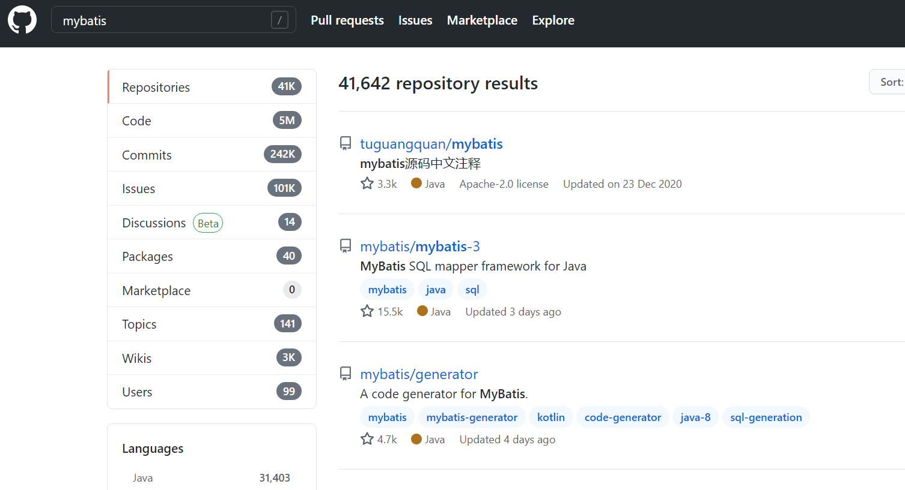
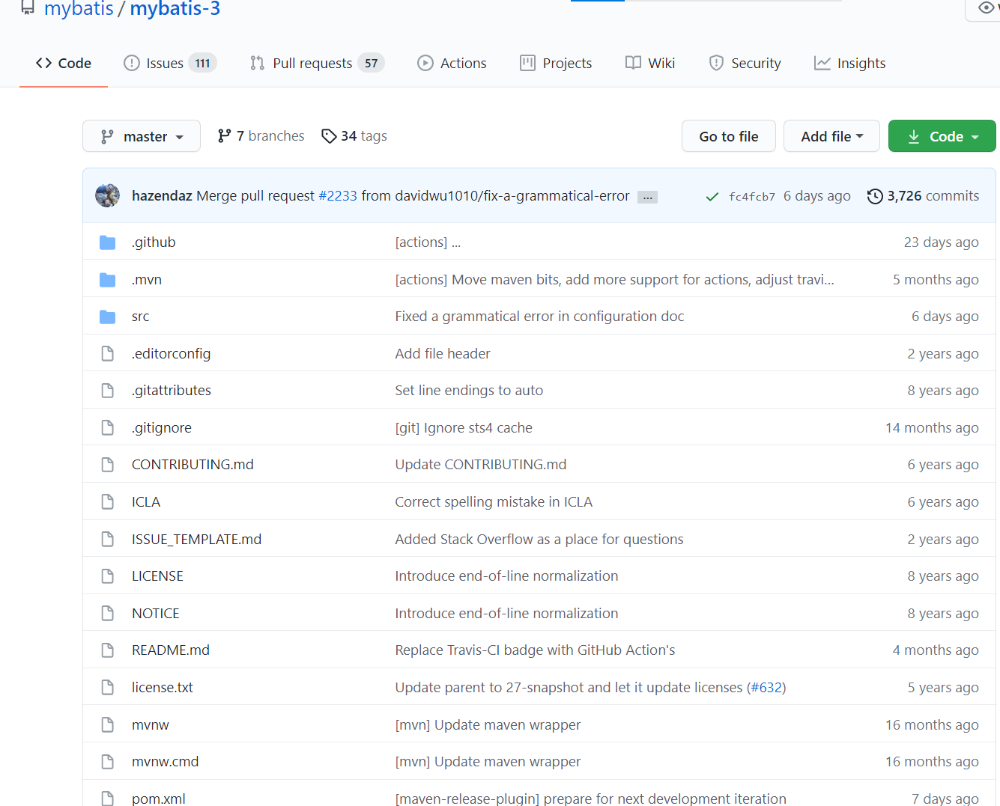
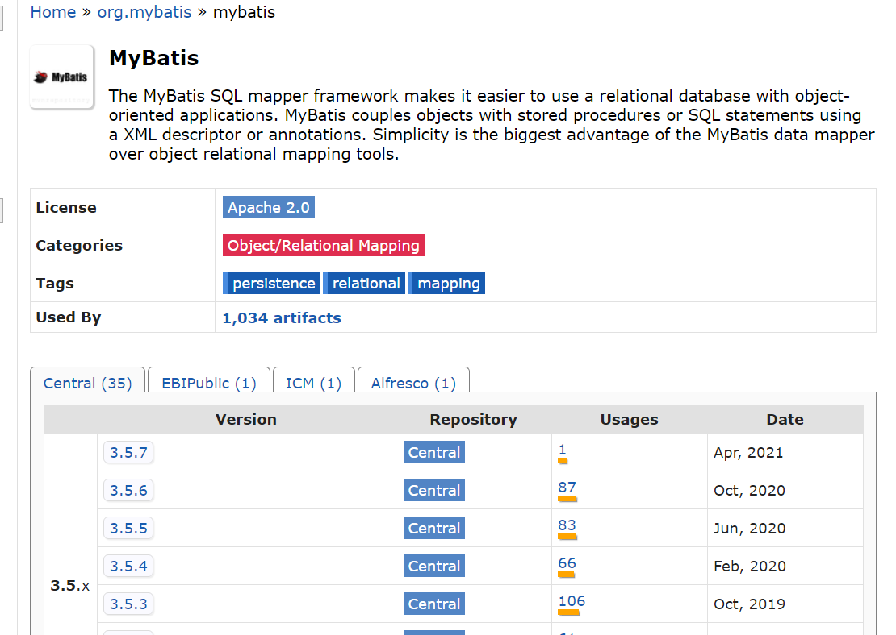
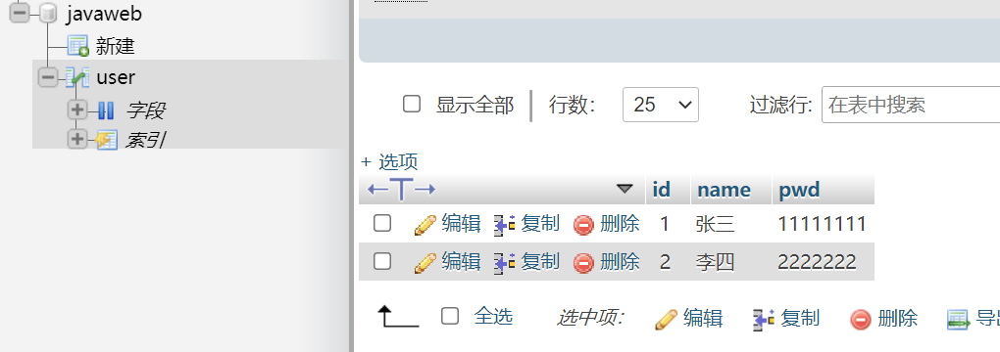
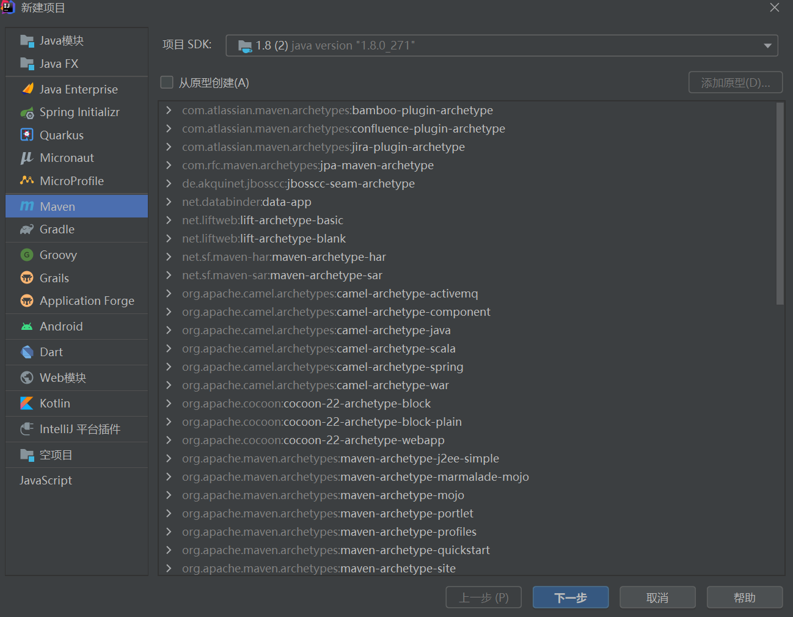
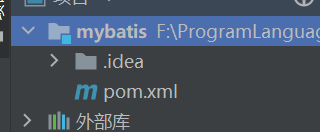
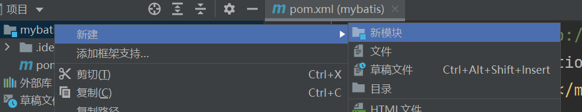
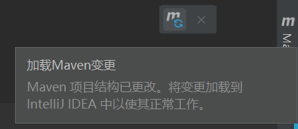

JavaWeb学习之路（六）——Mybatis入门
预备知识
- JDBC
- MySQL
- Java基础
- Maven
- Junit
初识MyBatis

什么是 MyBatis
- MyBatis 是一款优秀的持久层框架，它支持自定义 SQL、存储过程以及高级映射。
- MyBatis 免除了几乎所有的 JDBC 代码以及设置参数和获取结果集的工作。
- MyBatis 可以通过简单的 XML 或注解来配置和映射原始类型、接口和 Java POJO（Plain Old Java Objects，普通老式 Java 对象）为数据库中的记录。
如何获得MyBatis
- github
mybatis/mybatis-3: MyBatis SQL mapper framework for Java (github.com)


- Maven仓库
Maven Repository: org.mybatis » mybatis (mvnrepository.com)

1 | <!-- https://mvnrepository.com/artifact/org.mybatis/mybatis --> |
持久化
数据持久化
将程序的数据在持久状态和瞬时状态转化的过程
为什么需要持久化
有一些对象不能丢失
持久层
Dao层、Service层、Controller层
- 完成持久化从中的代码块
- 层界限十分明显
为什么需要MyBatis
传统JDBC太麻烦，简化框架，自动化。
特点
- 简单易学：本身就很小且简单。没有任何第三方依赖，最简单安装只要两个jar文件+配置几个sql映射文件易于学习，易于使用，通过文档和源代码，可以比较完全的掌握它的设计思路和实现。
- 灵活
- sql和代码的分离，提高了可维护性。
- 提供映射标签，支持对象与数据库的orm字段关系映射
- 提供对象关系映射标签，支持对象关系组建维护
- 提供xml标签，支持编写动态sql
使用的人多
开始使用MyBatis
搭建环境—->导入MyBatis—->编写代码—->测试
搭建环境
数据库

创建项目

删除src作为父工程

导入依赖
1
2
3
4
5
6
7
8
9
10
11
12
13
14
15
16
17
18<dependencies>
<dependency>
<groupId>mysql</groupId>
<artifactId>mysql-connector-java</artifactId>
<version>5.1.49</version>
</dependency>
<dependency>
<groupId>org.mybatis</groupId>
<artifactId>mybatis</artifactId>
<version>3.5.2</version>
</dependency>
<dependency>
<groupId>junit</groupId>
<artifactId>junit</artifactId>
<version>4.12</version>
<scope>test</scope>
</dependency>
</dependencies>
创建模块
建立一个Maven空模块

配置
创建mybatis-config.xml
1 |
|
编写工具类
1 | package top.huii.utils; |
编写代码
实体类
1
2
3
4
5
6
7
8
9
10
11
12
13
14
15
16
17
18
19
20
21
22
23
24
25
26
27
28
29
30
31
32
33
34
35
36
37
38
39
40
41
42
43
44
45
46
47
48
49
50package top.huii.pojo;
public class User {
private int id;
private String name;
private String pwd;
public User() {
}
public User(int id, String name, String pwd) {
this.id = id;
this.name = name;
this.pwd = pwd;
}
public int getId() {
return id;
}
public void setId(int id) {
this.id = id;
}
public String getName() {
return name;
}
public void setName(String name) {
this.name = name;
}
public String getPwd() {
return pwd;
}
public void setPwd(String pwd) {
this.pwd = pwd;
}
public String toString() {
return "User{" +
"id=" + id +
", name='" + name + '\'' +
", pwd='" + pwd + '\'' +
'}';
}
}
Dao接口
UserDao.java
1
2
3
4
5
6
7
8
9
10package top.huii.dao;
import top.huii.pojo.User;
import java.util.List;
public interface UserDao {
List<User> getUserList();
}
接口实现类
UserMapper.xml
1
2
3
4
5
6
7
8
9
10
<!--命名空间，绑定接口-->
<mapper namespace="top.huii.dao.UserDao">
<select id="getUserList" resultType="top.huii.pojo.User">
select * from javaweb.user
</select>
</mapper>注意:
- 需要在mybatis-config.xml中进行注册
1
2
3<mappers>
<mapper resource="top/huii/dao/UserMapper.xml"/>
</mappers>需要在pom.xml中配置, 防止资源导出失败
1
2
3
4
5
6
7
8
9
10
11
12
13
14
15
16
17
18
19
20
21<!-- 防止资源导出失败-->
<build>
<resources>
<resource>
<directory>src/main/resources</directory>
<includes>
<include>**/*.propertise</include>
<include>**/*.xml</include>
</includes>
<filtering>true</filtering>
</resource>
<resource>
<directory>src/main/java</directory>
<includes>
<include>**/*.propertise</include>
<include>**/*.xml</include>
</includes>
<filtering>true</filtering>
</resource>
</resources>
</build>做完更改后记得点一下这个
测试
1
2
3
4
5
6
7
8
9
10
11
12
13
14
15
16
17
18
19
20
21
22
23
24
25
26
27
28
29
30package top.huii.dao;
import org.apache.ibatis.session.SqlSession;
import org.junit.Test;
import top.huii.pojo.User;
import top.huii.utils.MybatisUtils;
import java.util.List;
public class UserDaoTest {
public void Test() {
// 获得sqlSession对象
SqlSession sqlSession = MybatisUtils.getSqlSession();
// 方式1：getMapper 推荐
UserDao mapper = sqlSession.getMapper(UserDao.class);
List<User> userList = mapper.getUserList();
// 方式2 不推荐
// List<User> userList = sqlSession.selectList("top.huii.dao.UserDao.getUserList");
for (User user :
userList) {
System.out.println(user);
}
sqlSession.close();
}
}结果
1
2User{id=1, name='张三', pwd='11111111'}
User{id=2, name='李四', pwd='2222222'}
本博客所有文章除特别声明外，均采用 CC BY-NC-SA 4.0 许可协议。转载请注明来自 HUII's Blog！
相关推荐


评论